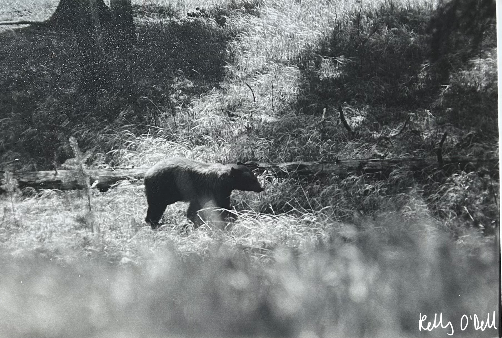
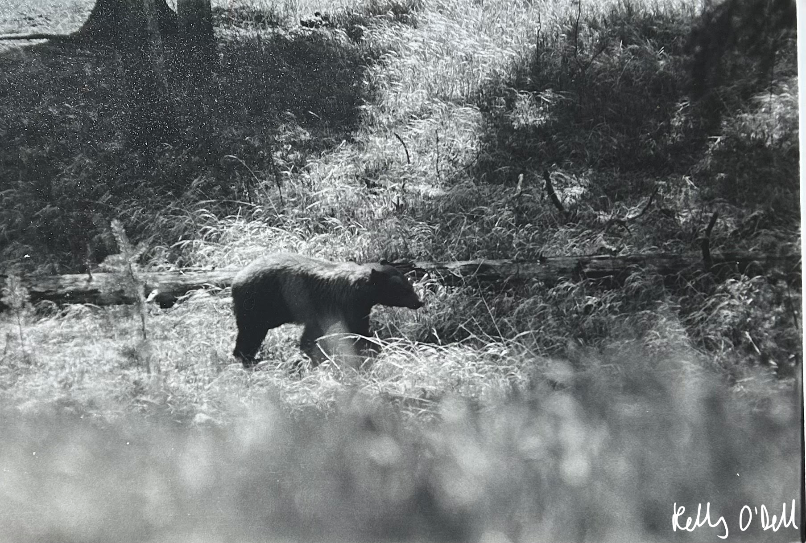
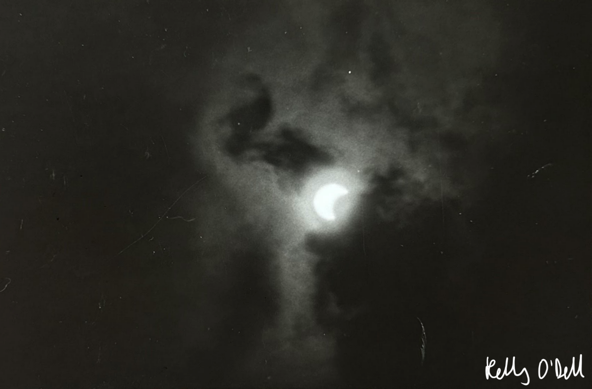
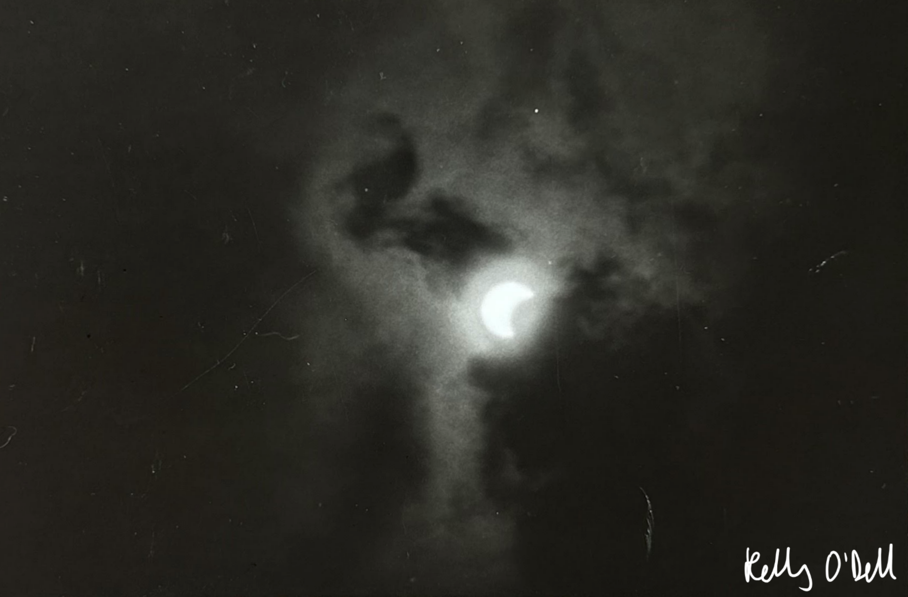

I became interested in photography in 8th grade when I took a multimedia class. In that class I especially loved the photoshop projects we did. So when I had the opportunity to buy my own film camera, I took it! I I already feel that I see life through a lens, so I wanted to be able to materialize this experience for myself and others. Plus, film photography is super engaging and pushes me to improve.

 



 
